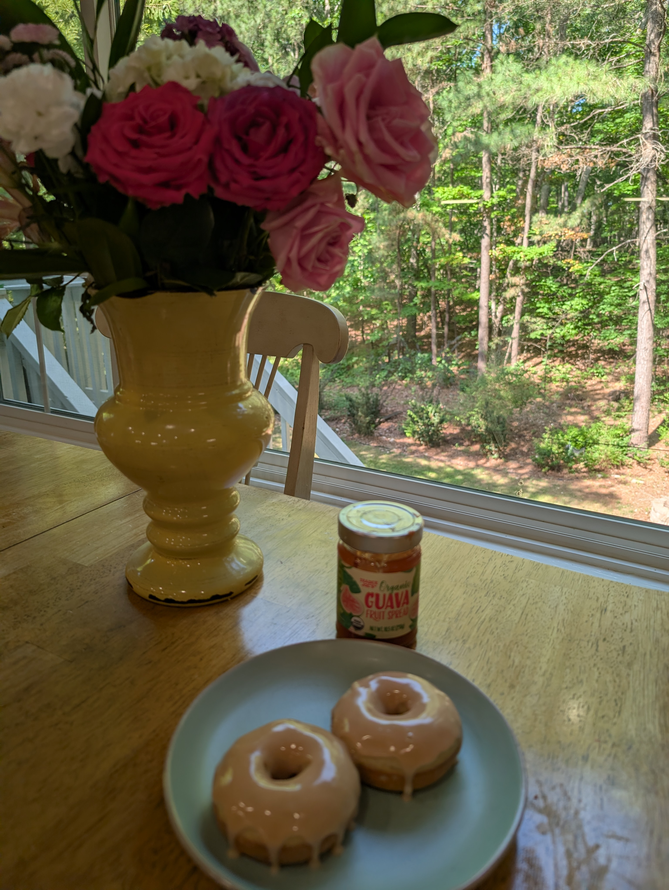
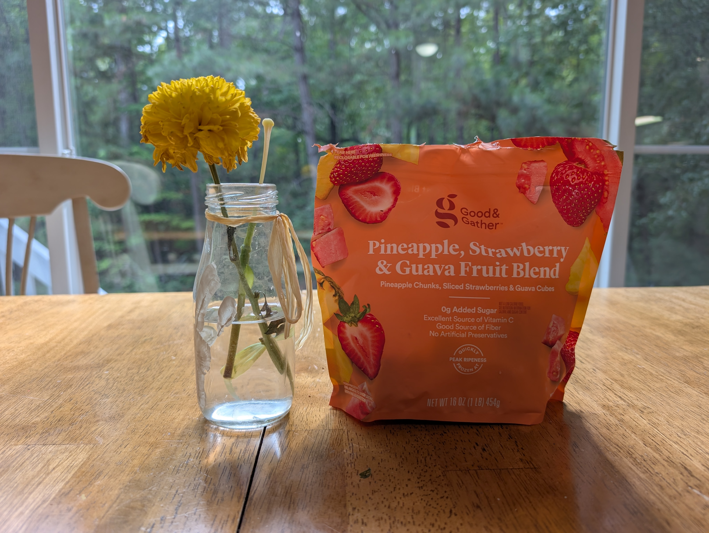

Recipes from Daniella's Bakery
Try some of Bob's favorite tropical treats at home!

Guava Baked Donuts
Ingredients
- 2 cups all-purpose flour
- 3/4 cup granulated sugar
- 2 teaspoons baking powder
- 1/2 teaspoon kosher salt
- 3/4 cup milk
- 2 large eggs
- 3 tablespoons unsalted butter melted
- 2 teaspoon vanilla extract
- 1 cup powdered sugar (for glaze)
- 1 tablespoon guava fruit spread (for glaze)
- 1 tablespoon milk (for glaze)
Instructions
- Preheat oven to 350°F (175°C) and lightly grease a donut pan.
- Whisk together flour, baking powder, and salt.
- In a separate bowl, whisk eggs, sugar, milk, melted butter, and vanilla extract.
- Pour wet ingredients into dry and stir until just combined.
- Pipe batter into pan, filling 2/3 full.
- Bake 11 to 14 minutes, let cool in pan, then transfer to a wire rack.
- For glaze, whisk powdered sugar, guava spread, and 1 tablespoon milk until smooth.
- Dip cooled donuts into glaze and let set.

Guava Puff Pastry
Ingredients
- Puff Pastry
- Guava fruit spread
- Powdered Sugar
Instructions
- Prepare a baking sheet with baking paper on top
- Defrost the puff pastry
- Divide into two layers and lay one on top of the other
- Using a pizza cutter, cut into 9 even pieces
- Put two teaspoons of guava fruit spread onto one layer of the puff pastry
- Cover each piece with the corresponding layer
- Bake at 400 degrees for 15 minutes
- Sprinkle with powdered sugar and let it cool before eating because the guava inside can stay quite hot!

Guava Lemonade
Ingredients
- Guava Nectar - one fourth cup
- Guava sparkling juice - one fourth cup sparkling guava
- Water - one third cup water
- Lemon Juice - 1 tablespoon
Instructions
Mix all ingredients and chill in refrigerator and serve cold

Tropical Guava Smoothie
Ingredients
- 1 cup frozen guava cubes
- 1/2 cup fresh or frozen pineapple chunks
- 1/2 cup plain or vanilla Greek yogurt
- 1/2 cup guava nectar
Instructions
- Add the frozen guava cubes, pineapple chunks, Greek yogurt, and guava nectar to a blender.
- Blend on high until completely smooth and creamy.
- If the smoothie is too thick, add a splash more guava nectar until it reaches your desired consistency.
- Pour into a tall glass and enjoy a taste of the tropics!

Guava Acai Bowl
Ingredients
- 1 packet (100g) frozen unsweetened acai puree
- 1/2 cup frozen guava chunks
- 1/2 frozen banana
- 1/4 cup guava nectar or apple juice
- Toppings: Granola, sliced kiwi, fresh mango, coconut flakes
Instructions
- Break the acai packet into pieces and add it to your blender.
- Add the frozen guava chunks, frozen banana, and guava nectar.
- Blend on a low speed, using a tamper if necessary, until thick and smooth (it should have a scoopable consistency).
- Spoon the thick blend into a bowl.
- Arrange your favorite tropical fruit toppings, coconut flakes, and granola neatly on top. Grab a spoon and dive in!